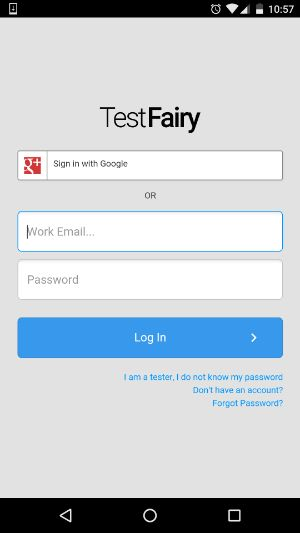
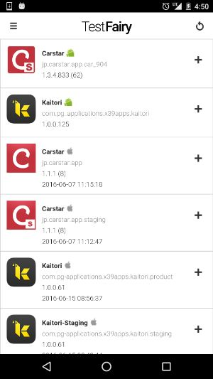
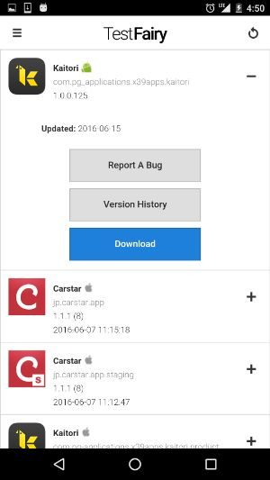
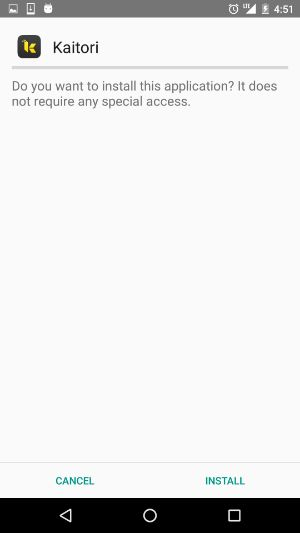
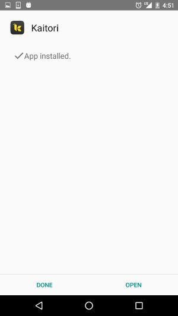
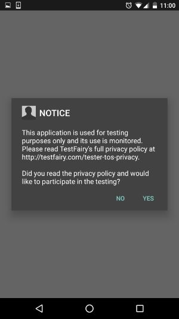

ユーザー名とパスワードを本部長または松山に確認して、Keep(メモ)に貼り付け。
Test FairyのアプリをGoogle Playよりインストール
リンク→ https://play.google.com/store/apps/details?id=com.testfairy.app
Test Fairyアプリを起動します。
メモに貼り付けたメールアドレスとパスワードを入力してログイン
KAITORIの横にある「＋」マークをタップ
小さなアンドロイドのマークがあるのを確認
Downloadって書いてある青いボタンをタップ
右下の「INSTALL」(インストール)をタップ
右下の「OPEN」(開く)をタップ
通常のアプリ一覧からも開けます。
規約確認ダイアログの「Yes」をタップ
興味がある人はこちら→ https://testfairy.com/tester-tos-privacy
アプリのテスト開始
不具合に気づいた場合、サイボーズより、松山宛てに内容を教えて下さい。
その時の状況を詳細に、スクリーンショット付きでもらえると非常に助かります。
アプリがストアに登録されるまで、継続的にバグ修正や細かな改善を行います。
日をまたいでテストしていただける場合は上記のステップを繰り返して、アプリを更新してください。